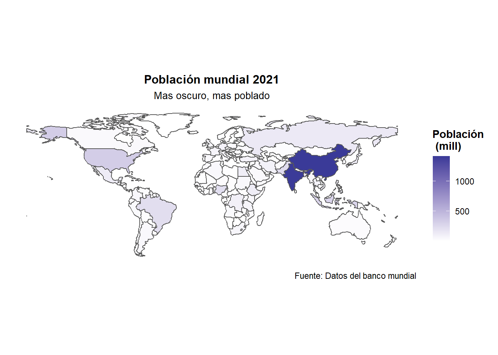
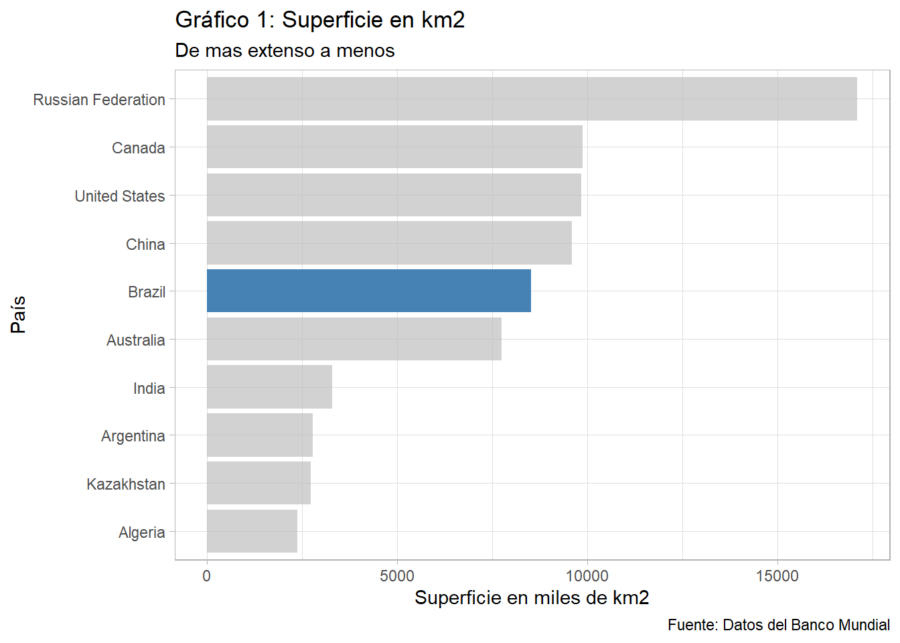
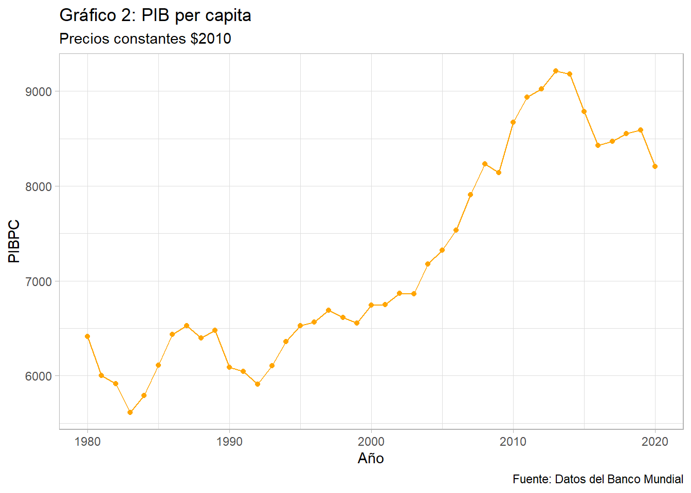
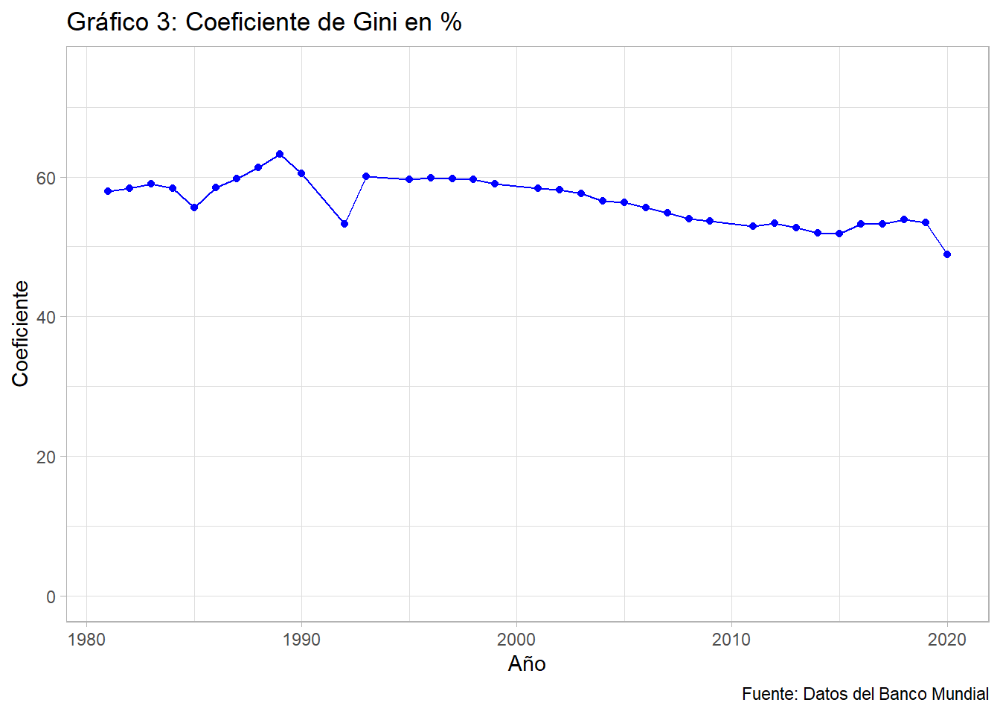

Comprobando si tienen fundamento las teorías económicas sobre el futuro de Brasil
trabajo BigData
Brasil
Crecimiento económico
Autor
Juan Emilio Gómez-Meana Torres (juanego@alumni.uv.es)
Fecha de Publicación
13 de enero de 2023
Datos
Los datos utilizados en este trabajo son la mayoría del banco mundial, por lo que he usado el paquete de wbstats junto a otros que a continuación pondremos.
La decisión de hacer el trabajo sobre este tema ha sido principalmente debido a otra asignatura que he cursado en la universidad este año donde tuve que hacer un ensayo en el que hablaba de este fascinante país y analizaba las posibles causas de su atraso económico así como el potencial que puede llegar a tener como economía dominante en el mundo debido a sus características.
Introducción
Brasil es un país localizado en el este de América del sur, cuya capital es Brasilia. Con una superficie de 8,5 millones de kilómetros cuadrados es el país más grande de Suramérica y el quinto más extenso del mundo, solo por detrás de Rusia, Canadá, China y EEUU. EN 2021 tenía una población de 214 millones de habitantes y una baja densidad de población de unos 25 habitantes por km cuadrado.
Código
library(tmap)data(World) world_map <- World %>%rename(iso3c = iso_a3) %>%select(iso3c)ver <-wb_search(pattern ="population, total", fields ="indicator")pob_tot <-"SP.POP.TOTL"df_pob_total <-wb_data(indicator = pob_tot, start_date =2021)df1 <-inner_join(df_pob_total, world_map, by ="iso3c")df2 <- df1 %>%mutate(Poblacion = SP.POP.TOTL/10^6)mapa_maybe <-ggplot() +geom_sf(data = df2, aes(geometry = geometry, fill = Poblacion))+theme(panel.grid.major =element_line(colour ="white"), panel.grid.minor=element_line(colour ="white"))+labs(title ="Población mundial 2021", fill="Población \n (mill)", subtitle ="Mas oscuro, mas poblado", caption ="Fuente: Datos del banco mundial") +theme(plot.title =element_text(size =15, face ="bold", hjust =0.5), plot.subtitle =element_text(size =10, hjust =0.5))+theme(panel.background =element_rect(fill ="black"))+scale_fill_gradient2()+theme(plot.title =element_text(size =12, face ="bold",hjust =0.5),plot.subtitle =element_text(hjust =0.5), axis.line =element_blank(),axis.text =element_blank(), axis.title =element_blank(),axis.ticks =element_blank(),legend.title =element_text(face ="bold"), legend.position ="right",legend.direction ="vertical", panel.background =element_rect(colour="white", size=1, fill ="white"))mapa_maybe

A continuación podemos observar un gráfico con los 10 países más extensos del mundo:
Código
ver2 <-wb_search(pattern ="surface", fields ="indicator")superf <-"AG.SRF.TOTL.K2"df_surface <-wb_data(indicator = superf, start_date =2020)df_surface2 <-df_surface %>%mutate(Superficie = AG.SRF.TOTL.K2 /10^3)df_surfmax <- df_surface2 %>%slice_max(Superficie, n=10)df_mutated <- df_surfmax %>%mutate(country = forcats::fct_reorder(country, Superficie))p1 <-ggplot(df_mutated, aes(country, Superficie)) +geom_col(fill ="steelblue") +coord_flip() + gghighlight::gghighlight(country %in%c("Brazil"))p1 +labs(title ="Gráfico 1: Superficie en km2",subtitle ="De mas extenso a menos",caption ="Fuente: Datos del Banco Mundial",x ="País",y ="Superficie en miles de km2") +theme_light()

Brasil es uno de los países que componen el BRICS, (Brasil, Rusia, India, China y Sudáfrica). Es una asociación económica-comercial de varios países que comparten ciertos rasgos como una población muy alta, mucha superficie, gran cantidad de recursos naturales, crecimiento del PIB… Esto los convierte en atractivos para inversores, y de hecho hay teorías que colocan a estos países como economías dominantes para el 2050.
Historia
Brasil es un país que reúne a gente de muchas partes del mundo debido a su historia y la mezcla de razas que se produjo derivando en una de las sociedades más interraciales del mundo actualmente.
Durante el periodo de colonización, que comprende desde la llegada de los europeos al continente hasta la independencia de Brasil en 1822, el país formó parte del imperio portugués, por lo que estuvo durante todo ese tiempo bajo el dominio político de Portugal. Fue un periodo muy largo con muchos conflictos con otros imperios colonizadores como el neerlandés y el español. A diferencia de la mayoría de las colonias, la independencia de Brasil en 1822 fue en cierta medida pacífica ya que fue un propio miembro de la familia real portuguesa quien declaró la independencia y formó el primer imperio brasileño, Pedro IV de Portugal, I de Brasil.
Durante ese imperio hubo varias corrientes insurgentes que se empezaron a oponer a la tendencia absolutista y centralizadora del imperio hasta que finalmente en 1889 un golpe de estado militar se llevó a cabo destituyendo al emperador del momento e iniciando una república dictatorial. Esta duró hasta 1930 y estuvo también plagadas de conflictos e insurrecciones de todos los tipos debido a las inestabilidades políticas, injusticias sociales, la pequeña participación en la I guerra mundial y alguna crisis económica. Todo esto fue poco a poco desestabilizando cada vez más el régimen y cuando llegaron los efectos del crack del 29, se puso fin a este primer periodo republicano.
El siguiente periodo de 1930 hasta el 45, es una junta militar quien toma el control del país. Se había prometido la realización de una nueva constitución ya que con el golpe de estado se había anulado la anterior. En 1934 se constituyó es nueva carta magna y se eligió a Getulio Vargas como presidente. Los próximos años los extremos ganaron mucha fuerza y hubo varios intentos de revoluciones izquierdistas, y en 1937 aprovechando esos conflictos, el mismo Getulio Vargas da un golpe de estado y se convierte en un dictador hasta 1945 cuando es obligado a dejar el poder.
En 1945 comienza el periodo conocido como republica nova y al año siguiente se redacta una nueva constitución más democrática que su predecesora. Hasta 1964 esta república sobrevivió a varios intentos de golpes hasta que en 1964 triunfa uno y se instaura un régimen de excepción. Estos se rodearon de técnicos y pensadores que consiguieron impulsar reformas económicas, fiscales y estructurales que eran necesarias. Se funda también el Banco central de Brasil que hasta la fecha sigue siendo la máxima autoridad monetaria en el país.
Ya en 1988 se reestableció la democracia con la actual constitución federal que dura hasta hoy en día. Aún así los distintos gobiernos que han ido sucediéndose han estado bastante marcados por la corrupción y la polarización política.
Economía
En cuanto a economía, Brasil es la mayor de América Latina en cuanto a PIB nominal y la décimo segunda del mundo actualmente. La economía brasileña ha estado caracterizada por la inestabilidad y por ser muy volátil con periodos de auge, seguidos por otros de estancamiento.
Código
ver3 <-wb_search(pattern ="GDP per capita", fields ="indicator")gdpPPA <-"NY.GDP.PCAP.KD"dfgdpPPABR <-wb_data(indicator = gdpPPA, country ="Bra", start_date =1980, end_date =2020)p2 <-ggplot(dfgdpPPABR, aes(x = date, y = NY.GDP.PCAP.KD )) +geom_point(color ="orange") +geom_line(color="orange")p2 +labs(title ="Gráfico 2: PIB per capita",subtitle ="Precios constantes $2010",caption ="Fuente: Datos del Banco Mundial",x ="Año",y ="PIBPC") +theme_light()

Como podemos observar en este gráfico, el PIB per capita Brasileño se ha disparado tras la industrializacion desde los 90 hasta el 2010 más o menos, cuando ha empezado a caer otra vez.
Estuvo durante mucho tiempo, antes de los intentos por industrializarse, centrada, especializada en el comercio con materias primas aprovechando la ventaja comparativa del territorio en el que había abundancia de recursos naturales. Esta especialización, supuso un coste en el desarrollo económico ya que cuando se produce algún shock internacional por alguna crisis, suelen producirse bloqueos internacionales que generan contracciones del comercio y caen los precios de las materias primas, provocando así saldos negativos en la balanza comercial.
Sabiendo esto, Brasil empezó un proceso de industrialización con la política de sustitución de importaciones, que implicaba una fuerte intervención del estado y poca competencia.
El crecimiento económico ha estado casi siempre muy limitado por las inestabilidades políticas y sociales que han estado azotando al país desde su independencia, en parte por la herencia colonial. El no disponer de unas buenas instituciones inclusivas que dicten unas leyes favorables para el crecimiento, que protejan la propiedad privada y los derechos, que no fueran tan interventores… ha sido una de las causas del atraso económico de Brasil. De hecho, la esclavitud no fue abolida hasta el 1888, más tarde que cualquier otro país de occidente.
En 2017, el gobierno Brasileño gastó el 16.5% del gasto público en educación, el 10.26% en sanidad, el 3.69% en defensa y el resto en otros asuntos.
En cuanto a la otra fuente lejana de crecimiento, la geografía, por una parte, fue también un desafío que superar debido a su gran extensión y a la lejanía de muchas de sus ciudades entre sí que hacía el transporte costoso y la duración demasiada larga. Brasil tiene también cierto problema con las infraestructuras que no ayudan a solucionar el problema de la gran extensión. Es uno de los países emergentes con menor densidad de carreteras y ferrocarriles por kilómetro cuadrado. La actividad económica se concentra sobre todo en la parte costera que da al atlántico, donde además se concentra la mayor densidad de población debido en parte, a la convivencia con una gran región inhabitable, la del Amazonas. Lejos también de otros núcleos importantes económicos de países vecinos de latino América, y sobre todo de Europa. Si que es verdad que ha proporcionado ciertas ventajas como el aprovechamiento de economías de escala debido a la gran aglomeración de población en esas zonas.
Cuando Brasil empezó a crecer de población rápidamente tuvieron que expandir zonas pobladas hacia el interior para usar más terreno cultivable y evitar así la trampa malthusiana. Un ejemplo de esta migración al interior es por ejemplo la fundación de Brasilia, actual capital.
Desigualdad
La pobreza es un problema importantísimo que lleva azotando a Brasil durante toda su historia. Hay una desigualdad notable en los ingresos, el 10% más rico de la población gana mas de la mitad del total de los ingresos según el “world inequality report” de 2022, y esto lleva siendo así desde hace mucho. En cuanto a la riqueza, ese mismo 10% más rico contiene casi el 80% de ella. Brasil es uno de los países más desiguales del mundo. Si que es verdad que desde 2000 gracias a ciertas políticas como el incremento del salario mínimo o la famosa “bolsa familia” han conseguido sacar a muchas familias de la pobreza, pero sigue siendo necesaria una reforma fiscal progresiva para reducir la desigualdad en general.
Código
ver4 <-wb_search(pattern ="Gini index", fields ="indicator")gini_index <-"SI.POV.GINI"dfgini_indexbr <-wb_data(indicator = gini_index, country ="Brazil", start_date =1981, end_date =2020)df_giniindexbr_nona <- dfgini_indexbr %>%drop_na("SI.POV.GINI")p3 <-ggplot(df_giniindexbr_nona, aes(x = date, y = SI.POV.GINI)) +geom_point(color ="blue") +geom_line(color="blue")p3 +lims(y =c(0,75)) +labs(title ="Gráfico 3: Coeficiente de Gini en %",caption ="Fuente: Datos del Banco Mundial",x ="Año",y ="Coeficiente") +theme_light()

El índice Gini de Brasil hoy en día esta sobre el 0.48, y parece que tiene una tendencia a la baja como se aprecia en el gráfico, hacia el buen camino, pero a un ritmo muy pequeño y sigue siendo demasiado alto, lo que conlleva un impedimento hacia el desarrollo económico estable.
Conclusiones y previsiones
En mi opinión, concuerdo con la clasificación como potencia emergente a Brasil ya que tiene los rasgos y la capacidad para, como dicen poder ser una economía dominante en el futuro, pero no sé si llegará a ello. Como hemos analizado en este ensayo hay ciertas piedras en el camino que no parece que tengan fácil solución. Los datos de desigualdad en el país son muy preocupantes, y la inestabilidad política que se ha vivido durante toda su historia no crea un ambiente propicio para la convergencia a países desarrollados. De hecho, un ejemplo de ferviente actualidad ha sido lo que hemos visto en las elecciones del pasado octubre en Brasil, con tensiones entre los candidatos, un resultado muy ajustado en la segunda vuelta donde salió vencedor el partido socialista brasileño de Lula da Silva, y que derivó en la no aceptación por parte de los seguidores de Bolsonaro provocando disturbios y violencia en las calles y que además ahora se está viviendo otro episodio más relacionado con este tema cuando algunos seguidores de bolsonaro han intentado asaltar los edifcios institucionales más importantes del país. Otro problema que está azotando a Brasil es la imposibilidad de migrar la economía hacia el sector servicios, esto ocurre cuando los ingresos per cápita empiezan a crecer, y se demandan mas servicios, pues esto no ha llegado a ocurrir derivando en el estancamiento de la economía.
Hasta que el país no solucione estos problemas sobre todo el de las desigualdades y la inestabilidad institucional, no creo que llegue a ser una potencia dominante.
Referencias
World inequality report 2022
“Desarrollo, vaivenes y desigualdad”; Luis Bertola y José Antonio Ocampo.
---title: "Análisis económico de Brasil"description: | Comprobando si tienen fundamento las teorías económicas sobre el futuro de Brasilauthor: Juan Emilio Gómez-Meana Torres (juanego@alumni.uv.es) #--date: 2023-01-13 #--categories: [trabajo BigData, Brasil, Crecimiento económico]image: "flag.png"title-block-banner: true #- {true, false, "green","#AA0000"}title-block-banner-color: "#d6cd15" #-"#FFFFFF" toc: truetoc-location: lefttoc-depth: 3smooth-scroll: trueformat: html: backgroundcolor: "white" standalone: true link-external-newwindow: true #css: ./assets/my_css_file.css #- CUIDADO!!!!code-tools: truecode-link: truecode-fold: true---## DatosLos datos utilizados en este trabajo son la mayoría del banco mundial, por lo que he usado el paquete de wbstats junto a otros que a continuación pondremos.```{r}library(wbstats) #install.packages("wbsats")library(tidyverse) #install.packages("tidyverse")library(dplyr) #install.packages("dplyr")library(rio) #install.packages("rio")library(here) #install.packages("here")library(gt) #install.packages("gt")library(ggplot2) #install.packages("ggplot2")library(gghighlight)#install.packages("gghighlight")library(tmap) #install.packages("tmap")library(sf) #install.packages("sf")```## MotivacionesLa decisión de hacer el trabajo sobre este tema ha sido principalmente debido a otra asignatura que he cursado en la universidad este año donde tuve que hacer un ensayo en el que hablaba de este fascinante país y analizaba las posibles causas de su atraso económico así como el potencial que puede llegar a tener como economía dominante en el mundo debido a sus características.## IntroducciónBrasil es un país localizado en el este de América del sur, cuya capital es Brasilia. Con una superficie de 8,5 millones de kilómetros cuadrados es el país más grande de Suramérica y el quinto más extenso del mundo, solo por detrás de Rusia, Canadá, China y EEUU. EN 2021 tenía una población de 214 millones de habitantes y una baja densidad de población de unos 25 habitantes por km cuadrado. ```{r}library(tmap)data(World) world_map <- World %>%rename(iso3c = iso_a3) %>%select(iso3c)ver <-wb_search(pattern ="population, total", fields ="indicator")pob_tot <-"SP.POP.TOTL"df_pob_total <-wb_data(indicator = pob_tot, start_date =2021)df1 <-inner_join(df_pob_total, world_map, by ="iso3c")df2 <- df1 %>%mutate(Poblacion = SP.POP.TOTL/10^6)mapa_maybe <-ggplot() +geom_sf(data = df2, aes(geometry = geometry, fill = Poblacion))+theme(panel.grid.major =element_line(colour ="white"), panel.grid.minor=element_line(colour ="white"))+labs(title ="Población mundial 2021", fill="Población \n (mill)", subtitle ="Mas oscuro, mas poblado", caption ="Fuente: Datos del banco mundial") +theme(plot.title =element_text(size =15, face ="bold", hjust =0.5), plot.subtitle =element_text(size =10, hjust =0.5))+theme(panel.background =element_rect(fill ="black"))+scale_fill_gradient2()+theme(plot.title =element_text(size =12, face ="bold",hjust =0.5),plot.subtitle =element_text(hjust =0.5), axis.line =element_blank(),axis.text =element_blank(), axis.title =element_blank(),axis.ticks =element_blank(),legend.title =element_text(face ="bold"), legend.position ="right",legend.direction ="vertical", panel.background =element_rect(colour="white", size=1, fill ="white"))mapa_maybe```A continuación podemos observar un gráfico con los 10 países más extensos del mundo:```{r}ver2 <-wb_search(pattern ="surface", fields ="indicator")superf <-"AG.SRF.TOTL.K2"df_surface <-wb_data(indicator = superf, start_date =2020)df_surface2 <-df_surface %>%mutate(Superficie = AG.SRF.TOTL.K2 /10^3)df_surfmax <- df_surface2 %>%slice_max(Superficie, n=10)df_mutated <- df_surfmax %>%mutate(country = forcats::fct_reorder(country, Superficie))p1 <-ggplot(df_mutated, aes(country, Superficie)) +geom_col(fill ="steelblue") +coord_flip() + gghighlight::gghighlight(country %in%c("Brazil"))p1 +labs(title ="Gráfico 1: Superficie en km2",subtitle ="De mas extenso a menos",caption ="Fuente: Datos del Banco Mundial",x ="País",y ="Superficie en miles de km2") +theme_light()```Brasil es uno de los países que componen el BRICS, (Brasil, Rusia, India, China y Sudáfrica). Es una asociación económica-comercial de varios países que comparten ciertos rasgos como una población muy alta, mucha superficie, gran cantidad de recursos naturales, crecimiento del PIB… Esto los convierte en atractivos para inversores, y de hecho hay teorías que colocan a estos países como economías dominantes para el 2050.## HistoriaBrasil es un país que reúne a gente de muchas partes del mundo debido a su historia y la mezcla de razas que se produjo derivando en una de las sociedades más interraciales del mundo actualmente.Durante el periodo de colonización, que comprende desde la llegada de los europeos al continente hasta la independencia de Brasil en 1822, el país formó parte del imperio portugués, por lo que estuvo durante todo ese tiempo bajo el dominio político de Portugal. Fue un periodo muy largo con muchos conflictos con otros imperios colonizadores como el neerlandés y el español. A diferencia de la mayoría de las colonias, la independencia de Brasil en 1822 fue en cierta medida pacífica ya que fue un propio miembro de la familia real portuguesa quien declaró la independencia y formó el primer imperio brasileño, Pedro IV de Portugal, I de Brasil.```{r}df_indepen <- rio::import(here::here("datos", "independence.xlsx"))flags <-c("https://upload.wikimedia.org/wikipedia/commons/thumb/1/1a/Flag_of_Argentina.svg/1200px-Flag_of_Argentina.svg.png", "https://upload.wikimedia.org/wikipedia/commons/thumb/b/b3/Bandera_de_Bolivia_%28Estado%29.svg/264px-Bandera_de_Bolivia_%28Estado%29.svg.png", "https://upload.wikimedia.org/wikipedia/commons/thumb/0/05/Flag_of_Brazil.svg/300px-Flag_of_Brazil.svg.png", "https://upload.wikimedia.org/wikipedia/commons/thumb/7/78/Flag_of_Chile.svg/2560px-Flag_of_Chile.svg.png", "https://upload.wikimedia.org/wikipedia/commons/thumb/2/21/Flag_of_Colombia.svg/1200px-Flag_of_Colombia.svg.png", "https://img.asmedia.epimg.net/resizer/WXUdABYkDkWMPwgvxWGj1bvaULg=/360x203/cloudfront-eu-central-1.images.arcpublishing.com/diarioas/DKFJVUJVTBCANOMGHAMXJ4JSHM.png", "https://www.visitarcuba.org/Images/bandera-de-cuba.jpg", "https://www.banderas-mundo.es/data/flags/w1600/ec.png", "https://upload.wikimedia.org/wikipedia/commons/thumb/3/34/Flag_of_El_Salvador.svg/2560px-Flag_of_El_Salvador.svg.png", "https://upload.wikimedia.org/wikipedia/commons/thumb/a/a4/Flag_of_the_United_States.svg/1200px-Flag_of_the_United_States.svg.png", "https://www.banderas-mundo.es/data/flags/w1600/gt.png", "https://www.banderasdelmundo.net/wp-content/uploads/2019/08/bandera-de-haiti.jpg", "https://www.banderas-mundo.es/data/flags/w580/hn.png", "https://www.banderasphonline.com/wp-content/uploads/2020/05/comprar-bandera-mexico-con-escudo-para-mastil-exterior-interior-1200x798.png", "https://www.banderasphonline.com/wp-content/uploads/2020/05/comprar-bandera-nicaragua-para-mastil-exterior-interior.png", "https://media.gettyimages.com/id/472330035/es/vector/bandera-de-panam%C3%A1.jpg?s=612x612&w=gi&k=20&c=pE1MBHJf8YT181CcB-pQFF3zw20JpVz_ImQ8lhz804k=", "https://upload.wikimedia.org/wikipedia/commons/thumb/2/27/Flag_of_Paraguay.svg/1280px-Flag_of_Paraguay.svg.png", "https://upload.wikimedia.org/wikipedia/commons/thumb/c/cf/Flag_of_Peru.svg/2560px-Flag_of_Peru.svg.png", "https://www.banderas-mundo.es/data/flags/w580/do.png", "https://upload.wikimedia.org/wikipedia/commons/thumb/f/fe/Flag_of_Uruguay.svg/270px-Flag_of_Uruguay.svg.png", "https://upload.wikimedia.org/wikipedia/commons/thumb/0/06/Flag_of_Venezuela.svg/2560px-Flag_of_Venezuela.svg.png")df_indepen_flags <-cbind(df_indepen, flags)df_indepen2 <- df_indepen_flags %>% gtdf_indepen2 %>% gt::text_transform(locations =cells_body(columns =c(flags)), fn =function(x){gt::web_image(x, height =25)})```Durante ese imperio hubo varias corrientes insurgentes que se empezaron a oponer a la tendencia absolutista y centralizadora del imperio hasta que finalmente en 1889 un golpe de estado militar se llevó a cabo destituyendo al emperador del momento e iniciando una república dictatorial. Esta duró hasta 1930 y estuvo también plagadas de conflictos e insurrecciones de todos los tipos debido a las inestabilidades políticas, injusticias sociales, la pequeña participación en la I guerra mundial y alguna crisis económica. Todo esto fue poco a poco desestabilizando cada vez más el régimen y cuando llegaron los efectos del crack del 29, se puso fin a este primer periodo republicano.El siguiente periodo de 1930 hasta el 45, es una junta militar quien toma el control del país. Se había prometido la realización de una nueva constitución ya que con el golpe de estado se había anulado la anterior. En 1934 se constituyó es nueva carta magna y se eligió a Getulio Vargas como presidente. Los próximos años los extremos ganaron mucha fuerza y hubo varios intentos de revoluciones izquierdistas, y en 1937 aprovechando esos conflictos, el mismo Getulio Vargas da un golpe de estado y se convierte en un dictador hasta 1945 cuando es obligado a dejar el poder.En 1945 comienza el periodo conocido como republica nova y al año siguiente se redacta una nueva constitución más democrática que su predecesora. Hasta 1964 esta república sobrevivió a varios intentos de golpes hasta que en 1964 triunfa uno y se instaura un régimen de excepción. Estos se rodearon de técnicos y pensadores que consiguieron impulsar reformas económicas, fiscales y estructurales que eran necesarias. Se funda también el Banco central de Brasil que hasta la fecha sigue siendo la máxima autoridad monetaria en el país.Ya en 1988 se reestableció la democracia con la actual constitución federal que dura hasta hoy en día. Aún así los distintos gobiernos que han ido sucediéndose han estado bastante marcados por la corrupción y la polarización política.## EconomíaEn cuanto a economía, Brasil es la mayor de América Latina en cuanto a PIB nominal y la décimo segunda del mundo actualmente. La economía brasileña ha estado caracterizada por la inestabilidad y por ser muy volátil con periodos de auge, seguidos por otros de estancamiento. ```{r}ver3 <-wb_search(pattern ="GDP per capita", fields ="indicator")gdpPPA <-"NY.GDP.PCAP.KD"dfgdpPPABR <-wb_data(indicator = gdpPPA, country ="Bra", start_date =1980, end_date =2020)p2 <-ggplot(dfgdpPPABR, aes(x = date, y = NY.GDP.PCAP.KD )) +geom_point(color ="orange") +geom_line(color="orange")p2 +labs(title ="Gráfico 2: PIB per capita",subtitle ="Precios constantes $2010",caption ="Fuente: Datos del Banco Mundial",x ="Año",y ="PIBPC") +theme_light()```Como podemos observar en este gráfico, el PIB per capita Brasileño se ha disparado tras la industrializacion desde los 90 hasta el 2010 más o menos, cuando ha empezado a caer otra vez.Estuvo durante mucho tiempo, antes de los intentos por industrializarse, centrada, especializada en el comercio con materias primas aprovechando la ventaja comparativa del territorio en el que había abundancia de recursos naturales. Esta especialización, supuso un coste en el desarrollo económico ya que cuando se produce algún shock internacional por alguna crisis, suelen producirse bloqueos internacionales que generan contracciones del comercio y caen los precios de las materias primas, provocando así saldos negativos en la balanza comercial.Sabiendo esto, Brasil empezó un proceso de industrialización con la política de sustitución de importaciones, que implicaba una fuerte intervención del estado y poca competencia.El crecimiento económico ha estado casi siempre muy limitado por las inestabilidades políticas y sociales que han estado azotando al país desde su independencia, en parte por la herencia colonial. El no disponer de unas buenas instituciones inclusivas que dicten unas leyes favorables para el crecimiento, que protejan la propiedad privada y los derechos, que no fueran tan interventores… ha sido una de las causas del atraso económico de Brasil. De hecho, la esclavitud no fue abolida hasta el 1888, más tarde que cualquier otro país de occidente.```{r}df_gasto <- rio::import(here::here("datos", "gasto.xlsx"))df_gasto2 <- df_gasto %>%mutate(Fecha =as.numeric(Fecha))df_gasto3 <- df_gasto2 %>%filter(Fecha ==2017) %>%select(-c(`Gasto público Per Capita`))edu <-"Gasto Educación (%Gto Pub)"slices <-c(16.5, 10.26, 3.69, 69.55)lbls <-c("Educación", "Salud", "Defensa", "Otras materias")pie(slices, labels = lbls, radius =0.6, col=rainbow(length(lbls)),main="Gasto público brasileño 2017")```En 2017, el gobierno Brasileño gastó el 16.5% del gasto público en educación, el 10.26% en sanidad, el 3.69% en defensa y el resto en otros asuntos.En cuanto a la otra fuente lejana de crecimiento, la geografía, por una parte, fue también un desafío que superar debido a su gran extensión y a la lejanía de muchas de sus ciudades entre sí que hacía el transporte costoso y la duración demasiada larga. Brasil tiene también cierto problema con las infraestructuras que no ayudan a solucionar el problema de la gran extensión. Es uno de los países emergentes con menor densidad de carreteras y ferrocarriles por kilómetro cuadrado. La actividad económica se concentra sobre todo en la parte costera que da al atlántico, donde además se concentra la mayor densidad de población debido en parte, a la convivencia con una gran región inhabitable, la del Amazonas. Lejos también de otros núcleos importantes económicos de países vecinos de latino América, y sobre todo de Europa. Si que es verdad que ha proporcionado ciertas ventajas como el aprovechamiento de economías de escala debido a la gran aglomeración de población en esas zonas. Cuando Brasil empezó a crecer de población rápidamente tuvieron que expandir zonas pobladas hacia el interior para usar más terreno cultivable y evitar así la trampa malthusiana. Un ejemplo de esta migración al interior es por ejemplo la fundación de Brasilia, actual capital.## DesigualdadLa pobreza es un problema importantísimo que lleva azotando a Brasil durante toda su historia. Hay una desigualdad notable en los ingresos, el 10% más rico de la población gana mas de la mitad del total de los ingresos según el "world inequality report" de 2022, y esto lleva siendo así desde hace mucho. En cuanto a la riqueza, ese mismo 10% más rico contiene casi el 80% de ella. Brasil es uno de los países más desiguales del mundo. Si que es verdad que desde 2000 gracias a ciertas políticas como el incremento del salario mínimo o la famosa “bolsa familia” han conseguido sacar a muchas familias de la pobreza, pero sigue siendo necesaria una reforma fiscal progresiva para reducir la desigualdad en general.```{r}ver4 <-wb_search(pattern ="Gini index", fields ="indicator")gini_index <-"SI.POV.GINI"dfgini_indexbr <-wb_data(indicator = gini_index, country ="Brazil", start_date =1981, end_date =2020)df_giniindexbr_nona <- dfgini_indexbr %>%drop_na("SI.POV.GINI")p3 <-ggplot(df_giniindexbr_nona, aes(x = date, y = SI.POV.GINI)) +geom_point(color ="blue") +geom_line(color="blue")p3 +lims(y =c(0,75)) +labs(title ="Gráfico 3: Coeficiente de Gini en %",caption ="Fuente: Datos del Banco Mundial",x ="Año",y ="Coeficiente") +theme_light()```El índice Gini de Brasil hoy en día esta sobre el 0.48, y parece que tiene una tendencia a la baja como se aprecia en el gráfico, hacia el buen camino, pero a un ritmo muy pequeño y sigue siendo demasiado alto, lo que conlleva un impedimento hacia el desarrollo económico estable.## Conclusiones y previsionesEn mi opinión, concuerdo con la clasificación como potencia emergente a Brasil ya que tiene los rasgos y la capacidad para, como dicen poder ser una economía dominante en el futuro, pero no sé si llegará a ello. Como hemos analizado en este ensayo hay ciertas piedras en el camino que no parece que tengan fácil solución. Los datos de desigualdad en el país son muy preocupantes, y la inestabilidad política que se ha vivido durante toda su historia no crea un ambiente propicio para la convergencia a países desarrollados. De hecho, un ejemplo de ferviente actualidad ha sido lo que hemos visto en las elecciones del pasado octubre en Brasil, con tensiones entre los candidatos, un resultado muy ajustado en la segunda vuelta donde salió vencedor el partido socialista brasileño de Lula da Silva, y que derivó en la no aceptación por parte de los seguidores de Bolsonaro provocando disturbios y violencia en las calles y que además ahora se está viviendo otro episodio más relacionado con este tema cuando algunos seguidores de bolsonaro han intentado asaltar los edifcios institucionales más importantes del país. Otro problema que está azotando a Brasil es la imposibilidad de migrar la economía hacia el sector servicios, esto ocurre cuando los ingresos per cápita empiezan a crecer, y se demandan mas servicios, pues esto no ha llegado a ocurrir derivando en el estancamiento de la economía. Hasta que el país no solucione estos problemas sobre todo el de las desigualdades y la inestabilidad institucional, no creo que llegue a ser una potencia dominante.## Referencias- World inequality report 2022- "Desarrollo, vaivenes y desigualdad”; Luis Bertola y José Antonio Ocampo.- “Tiempo de decisiones”; Andrew Powell- https://www.lonelyplanet.es/america-del-sur/brasil/historia- https://es.wikipedia.org/wiki/Econom%C3%ADa_de_Brasil#Comercio_exterior- https://www.bancomundial.org/es/home- https://www.oecd.org/acerca/